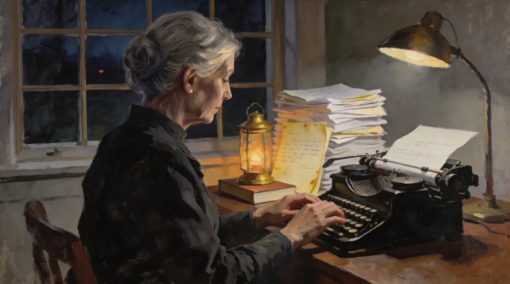

About the Project
Four brothers from one farm town on Lake Champlain went to war in 1861. Henry (34th New York) was killed in the West Woods at Antietam; his body was never recovered. Alexander (60th New York) fought at Culp’s Hill at Gettysburg — writing home on July 4, 1863, “We are burying our and the rebel’s dead today” — was wounded at Lookout Mountain, and marched to Atlanta. James and Charles (153rd New York) fought at Cedar Creek in the Shenandoah; James, wounded there, survived the war only to die in Albany on his way home. Their mother, Frances, held the household together and wrote back — including a letter to Henry, composed while she read the casualty lists “with trembling,” that he never lived to receive.
This archive holds all 272 surviving letters of that correspondence, 1861–1870 — transcribed in full, searchable, cross-referenced against the public record, and explorable through nine interactive views. It is free, with no ads and no paywall.
Five generations, one archive
- Frances Hubbell1860s
saved the letters as they arrived in Champlain, New York. - Gladys Sands Hubbell1947–49
typed all 272 letters on a typewriter — the typescripts that carried the collection into the modern era. - Fred Alexander Hubbell Jr.1996
wrote the collection’s introduction. - Bruce Levitt2010s
digitized the typescripts. - Alexander Hubbell Levitt2026
transcribed, structured, verified, and published the whole collection as this archive.
Every generation used the tools it had. This site is the fifth act.
The method — and the rule that governs it
The model reads, sorts, proposes, and points. Nothing enters the record without a human verifying it against a document.
AI vision read the typescripts and surviving originals; a human reviewed every letter. Each letter is structured into layers that keep source facts, editorial judgment, and computed analysis separate, so a reader can always tell which is which. The 486 people and 353 places in the letters were resolved with curated identity tables — never fuzzy name-matching. Each brother was then cross-referenced against muster rolls, pension indexes, period newspapers, and cemetery records, with every verdict logged.
That verification produced discoveries of its own. The public record confirmed Henry’s death, corroborated Alexander’s Lookout Mountain wound — and corrected the family’s own memory: for 160 years the family remembered James dying on October 19, 1865, but rosters, newspapers, and the brothers’ cemetery monument prove it was October 12. The 19th was the anniversary of his Cedar Creek wound.
A full methodology paper documenting the pipeline, the verification log, and the open discrepancies is maintained with the archive and is available on request. And the questions this method should be asked — how accurate, how much was AI, how identity is resolved — have a page of their own: Questions Worth Asking, where every answer ends at the place in the archive you can check it.
Who made this
Alexander Hubbell Levitt is a technology researcher in Athens, Georgia, and the great-great-grandson and namesake of Alexander F. Hubbell — the one brother of the four who came home. His mother’s family preserved the letters for 160 years; he built this archive to finish the job they started, and to show what any family’s box of letters could become when modern tools are held to an archivist’s standards.
Contact & citation
Questions, corrections, press inquiries, or a box of letters of your own: theaihubops@gmail.com. Corrections are welcomed — the archive’s method depends on them. For media materials, see the press page.
To cite the archive:
Individual letters carry stable IDs (LTR-YYYY-MM-DD-###), shown in the letter reader. Letter texts are in the public domain; classroom and scholarly use is encouraged.